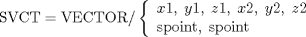

| 3.13. The Vector (VECTOR) Definitions | ||
|---|---|---|
 | Chapter 3. Geometric Statements in APT |  |
| 3.13. The Vector (VECTOR) Definitions | ||
|---|---|---|
| | Chapter 3. Geometric Statements in APT | |
The vector is that quantity which has both magnitude and direction. In cases where a specific magnitude is not defined for a vector, the unit vector (magnitude = 1) is assumed.
The formats given in Section 3.13.4, Section 3.13.5, Section 3.13.6 and Section 3.13.9 accept as input both points and vectors. In these formats, if a point is specified it is equivalent to a vector from the origin to the given point.
SVCT = VECTOR/ x, y, z

![[Note]](images/note.png) | Note |
|---|---|
The defined vector is from the first point toward the second point. (See Figure 3.47) |
The modifiers are used to indicate the direction the vector is to point. (POSX indicates the vector points in the positive X direction, etc.)
SVCT = VECTOR/ scalar, TIMES, svector
SVCT = VECTOR/ svector, CROSS, svector
| Note |
|---|---|
The resultant vector will be perpendicular to the plane of the two given vectors, and its length will be the scalar product of the magnitudes of the given vectors and the sine of the included angle. The direction of the resultant vector will be as see in Figure 3.50 (an application of the "right-hand rule"). |
| Note |
|---|---|
A normalized vector has the same direction as the given vector, with a magnitude equal to one. |
The angle is measured from the first axis specified in the modifier; that is, from the X axis in the XYPLAN, from the Y axis in the YZPLAN, and from the Z axis in the ZXPLAN.
SVCT = VECTOR/ svector, PLUS, svector
SVCT = VECTOR/ spoint, PLUS, spoint
SVCT = VECTOR/ svector, MINUS, svector
SVCT = VECTOR/ spoint, MINUS, spoint
| |  | |
| 3.12. The Loft Conic (LCONIC) Definitions |  | 3.14. The Matrix (MATRIX) Definitions |